地政学
ダーバンはインド洋航路と南部アフリカ内陸を結ぶ港湾都市で、ヨハネスブルグ方面の物流を海へ出す要です。港、鉄道、道路、空港、州都圏との関係が、貿易と災害時の補給を左右します。海に開く国の実務拠点です。
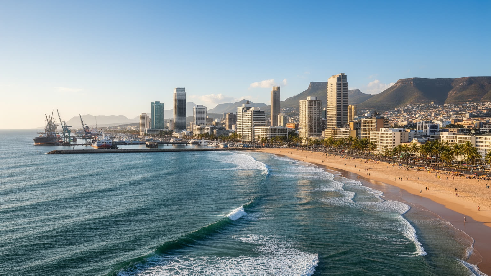
🇿🇦 南アフリカ / クワズール・ナタール州 / World City Atlas
インド洋に開く南アフリカ最大級の港湾都市。ビーチリゾート、物流、インド系ディアスポラ、ズールー地域の政治、アパルトヘイトの記憶、洪水リスク、タウンシップの暮らしが重なる都市です。
都市の骨格
ダーバンは天然港を核に、南アフリカ内陸の鉱工業地帯と世界の海上輸送を結ぶ。ビーチ沿いの観光都市であると同時に、インド系社会、ズールー文化圏、タウンシップ、洪水に弱い谷筋を抱える複雑な生活都市でもある。
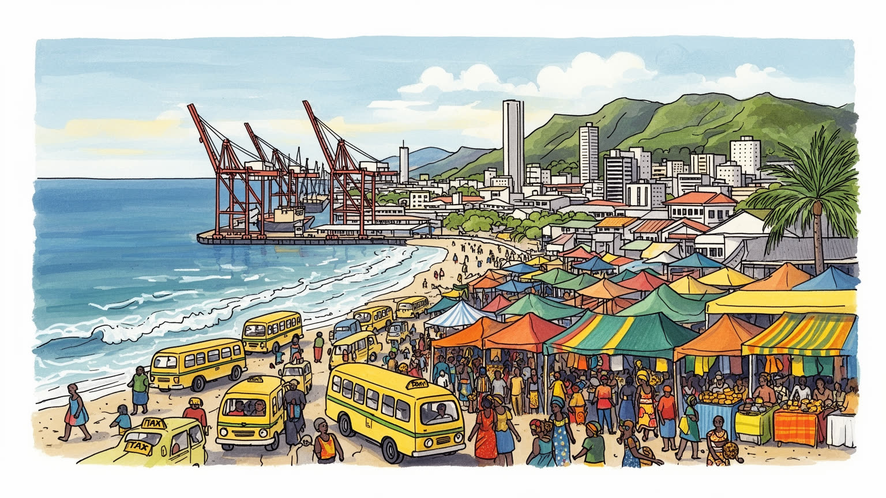
ダーバンはインド洋航路と南部アフリカ内陸を結ぶ港湾都市で、ヨハネスブルグ方面の物流を海へ出す要です。港、鉄道、道路、空港、州都圏との関係が、貿易と災害時の補給を左右します。海に開く国の実務拠点です。
港湾、倉庫、製造、小売、観光、建設、清掃、警備、配達が雇用を作ります。コンテナの効率と海辺の接客は同じ都市経済にあり、失業、非正規、通勤費、技能訓練が家計を大きく揺らします。仕事の安定も重要です。
ズールー語の生活圏、インド系のヒンドゥー寺院、モスク、教会、市場、カレー文化、音楽、海岸の余暇が混ざります。植民地、契約労働、アパルトヘイトの記憶が、祝祭と日常の食卓に今も残っています。祈りも街を結びます
旅行者はゴールデンマイル、港、市場、水族館、郊外の緑を巡ります。住民は住宅、治安、水道、洪水、通勤、学校、雇用に向き合い、海辺の明るさと丘陵の生活難を同時に抱えます。休日の海も生活の近くにあります。
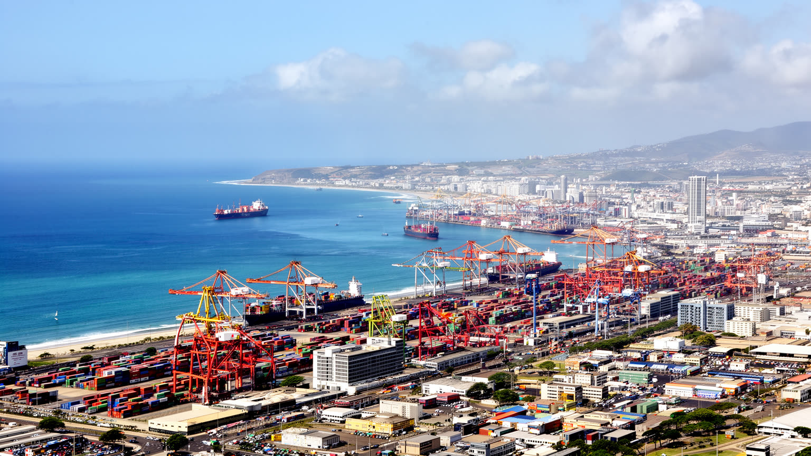
ダーバンの都市としての重みは、インド洋に開く港から始まります。湾の内側にはコンテナターミナル、石油施設、自動車輸出、倉庫、修理、タグボート、通関、トラック輸送が密集し、内陸のハウテン州や鉱工業地帯で作られた商品を世界市場へつなぎます。港は観光客が海を眺める背景ではなく、南アフリカ経済の時間表そのものです。鉄道が遅れ、道路が詰まり、クレーンが止まれば、工場、商店、農産物輸出、燃料供給まで影響が広がります。港湾の近くでは雇用が生まれる一方、トラック交通、騒音、大気汚染、危険物、土地利用の衝突も起きます。効率化や民間投資は必要ですが、岸壁で働く人、周辺住民、小さな物流業者の安全と暮らしを置き去りにすれば、港の強さは都市の不公平を深めます。ダーバンを読むには、ビーチの明るさと同時に、早朝のゲート、待機するトラック、積み上がるコンテナ、港湾労働者の休憩所を見る必要があります。インド洋の風景は余暇だけでなく、南部アフリカが世界と接続する重い実務を運んでいます。港の能力は国の貿易政策、鉄道改革、治安、電力供給にも左右され、都市の行政だけで完結しません。だからダーバンの港湾問題は、地元の渋滞対策であると同時に国家経済の信頼性を測る問題でもあります。湾岸の判断は、街の雇用にも直結します。港は街を動かします。
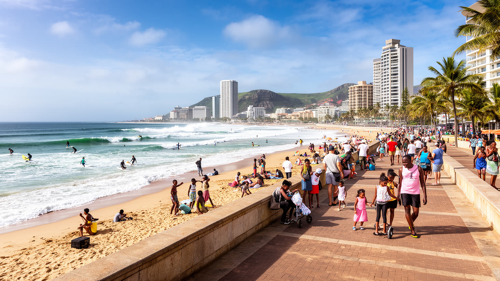
ダーバンの海岸線は、都市の最も分かりやすい顔です。ゴールデンマイルの砂浜、遊歩道、サーフィン、ホテル、水族館、屋台、家族連れの週末は、内陸の都市とは違う開放感を作ります。温暖な海と長いビーチは国内旅行者を引き寄せ、学校休暇や年末年始には海辺の宿泊、飲食、警備、清掃、交通が一気に忙しくなります。しかし海岸観光は、単なる休暇産業ではありません。アパルトヘイト期には海辺の利用も人種で分けられ、誰がどの砂浜で泳げるかが政治そのものでした。現在の共有されたビーチには、その分断を越えて都市を使い直す意味があります。一方で、治安への不安、水質汚染、下水インフラ、高潮、海岸侵食、ホテル地区の空室、周辺小商いの不安定さは、観光都市の弱点を露出させます。海辺が観光客だけの場所になれば、住民の日常の余暇は狭くなります。反対に、公共トイレ、照明、救命、交通、清掃が整えば、海岸は所得や地区を越えて人が集まる都市の広場になります。ダーバンのビーチは、消費の舞台であると同時に、都市が自分の公共性を試す場所です。波を見る人、働く人、祈る人、走る人、商売する人が同じ潮風を分け合う時、この街の海辺らしさが立ち上がります。観光の質は、写真の明るさだけでなく、住民が安心して夜明けの散歩に戻れるかでも測られます。毎日の清掃も信頼を支えます。
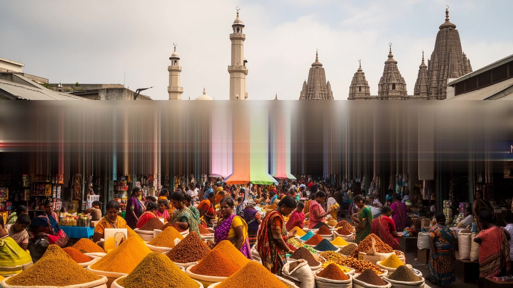
ダーバンは、アフリカ大陸でも特に大きなインド系社会を持つ都市として知られます。その歴史は、砂糖プランテーションへ送られた契約労働者、商人、宗教施設、家族経営の店、学校、政治運動に深く結びついています。市場や商店街ではスパイス、野菜、布、宝飾、携帯店、食堂が並び、ヒンドゥー寺院、モスク、教会が近接します。バニー・チャウのような食文化は観光客にも親しまれますが、その背景には移住、労働、隔離、工夫、貧しさの中で持ち運ばれた味があります。インド系社会は一枚岩ではなく、宗教、言語、階層、出身、政治的立場によって多様です。アパルトヘイト下では白人でも黒人でもない分類に置かれ、居住地、商売、教育、政治参加を制限されました。その経験は、今日の家族の記憶、学校、結婚、商業ネットワーク、地域団体にも影を落とします。ズールー語圏、英語圏、アフリカーンス語の制度、移民の新しい波が重なる中で、ダーバンのインド系文化は閉じた共同体ではなく、都市全体の食、商業、音楽、政治を形づくる一部です。華やかな祭りや市場の色を見るだけでなく、契約労働の痛み、商いの粘り、差別を越えて築いた公共生活を見ると、ダーバンの多文化性はより深く読めます。家庭の台所と港の移民史がつながる点に、この都市の独自性があります。店先の会話も歴史を運びます。
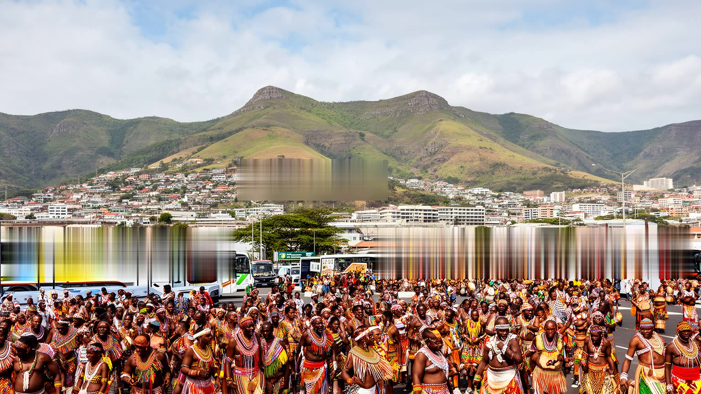
ダーバンは海港都市であると同時に、クワズール・ナタール州のズールー語圏へ入る大きな都市的入口です。市街の内側にもズールー語を話す住民は多く、周辺の丘陵、タウンシップ、農村、州内の小都市から、仕事、学校、病院、買い物、行政手続きのために人が集まります。ズールー文化は観光向けの踊りや衣装だけで理解できるものではありません。親族、葬儀、教会、伝統的権威、都市の家計送金、ミニバスタクシー、音楽、政治組織、土地への記憶が、都市生活の中に入り込んでいます。州内政治はしばしば激しく、政党間競争、地域リーダー、サービス提供への不満、雇用の不足が街の雰囲気にも影響します。ダーバンの中心部で働く人の多くは、郊外や遠い谷筋から通い、給料は都市の外の家族や儀礼にも使われます。都市と農村は切り離された世界ではなく、冠婚葬祭、季節の移動、送金、言語、親族の世話で結ばれています。ズールー地域としてダーバンを見ると、港湾や観光だけでは説明できない社会の奥行きが見えます。海辺のホテルから丘陵の住宅地へ視線を移すと、南アフリカの都市がいかに広い生活圏を背負っているかが分かります。文化は見世物ではなく、都市で働きながら家族と土地を支える日常の方法です。ダーバンの公共空間では、英語の商業看板とズールー語の会話が重なり、街の所属感を作っています。
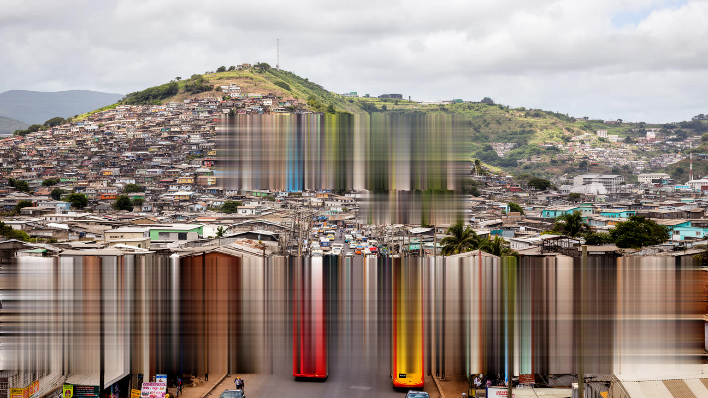
ダーバンの暮らしを海岸だけで語ることはできません。市域は広く、丘陵、谷筋、タウンシップ、非公式居住地、郊外住宅地、工業地帯が複雑に広がります。アパルトヘイト期の空間政策は、黒人、インド系、カラード、白人の居住地を分け、仕事場と住まいの距離を長くしました。その遺産は現在も通勤費、学校への距離、医療、治安、水道、排水、土地の権利に残っています。UmlaziやKwaMashuのような大きなタウンシップには、商店、学校、教会、音楽、スポーツ、起業の力がありますが、失業、犯罪、若者の機会不足、公共交通の不安定さも深刻です。非公式居住地では、斜面や河川沿いに家が建ち、豪雨や火災、土砂崩れの危険が高くなります。住宅政策は新しい家を供給するだけでは足りません。仕事に近い土地、交通費の低減、排水、電力、公共施設、地域の安全、住民の参加がそろわなければ、暮らしは安定しません。ダーバンの住宅地を歩くと、分断の歴史と、住民が自分たちで商売、教会、送迎、相互扶助を組み立てる力が同時に見えます。都市の社会問題は、海岸の観光地から遠い場所に押し込められているのではなく、港湾労働、ホテル清掃、警備、販売を通じて中心部とつながっています。住まいの場所が人生の選択肢を決めすぎることが、この都市の大きな課題です。改善は地域の声から始まります。
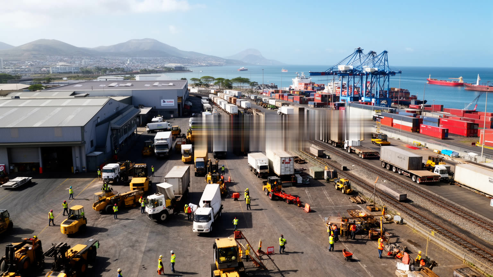
ダーバンの物流は、港の岸壁だけで終わりません。コンテナは倉庫、保税区域、鉄道ヤード、高速道路、内陸ターミナル、工場、小売店へ動き、運転手、荷役、通関事務、機械整備、警備、清掃、配車、情報システムの仕事をつなぎます。ヨハネスブルグ方面へ伸びる回廊は、南アフリカの消費と製造を支える生命線ですが、道路の混雑、事故、燃料費、鉄道の信頼性、港湾の滞留は、企業にも労働者にも重い負担になります。物流労働は時間に追われ、夜勤や長距離運転、安全リスクを伴います。効率を高めるためのデジタル化や自動化は必要でも、仕事の安定、技能訓練、賃金、休息、安全を軽視すれば、都市の競争力は働く人の疲弊の上に成り立ってしまいます。ダーバンでは公式経済と非公式経済も接しています。大きな倉庫の周辺には小さな修理屋、食堂、露店、ミニバスタクシーがあり、貨物の流れは近隣の生活を動かします。物流都市を読むには、港湾処理量の数字だけでなく、道路沿いの待機列、運転手の食事、倉庫の雇用、通勤する家族の時間を見る必要があります。世界貿易は海上輸送の抽象的な線ではなく、都市の人が眠れない夜や、納期に追われる朝として現れます。ダーバンの経済力は、その見えにくい労働の連鎖に支えられています。だから交通改革は、企業の効率だけでなく生活の尊厳に関わります。
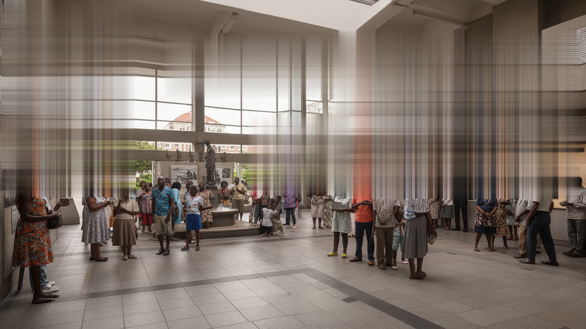
ダーバンの明るい海岸景観の背後には、植民地支配とアパルトヘイトの長い記憶があります。港と砂糖産業、契約労働、インド系社会、ズールー地域、白人向けの海辺リゾート、黒人居住地の周縁化は、同じ都市の中で別々の移動と生活を作りました。かつて海岸や公共施設は人種で分けられ、中心部で働く人の多くは遠くのタウンシップから通わされました。民主化後、法的な隔離は終わりましたが、住宅地、所得、教育、治安、土地所有、交通の形は一日で変わりません。記憶は博物館や記念碑だけにあるのではなく、家族がどの地区に住むことを許されたか、どの学校へ通えたか、どの海で泳げたか、どの仕事に就けたかという具体的な経験に残ります。ダーバンでは、インド系住民と黒人住民の関係にも緊張と連帯の両方があり、政治的な対立や暴力の記憶も都市の会話に影を落とします。過去を語ることは、観光都市の印象を暗くするためではありません。現在の住宅政策、雇用、治安、教育、公共空間の使い方を理解するために必要です。海岸で多くの人が自由に歩けることは大きな変化ですが、その自由が本当に平等な暮らしへ広がっているかは、まだ問われています。ダーバンを読むには、波の音とともに、分断を越えようとしてきた人々の声を聞く必要があります。記憶を避けないことが、都市を浅いリゾート像から解放します。
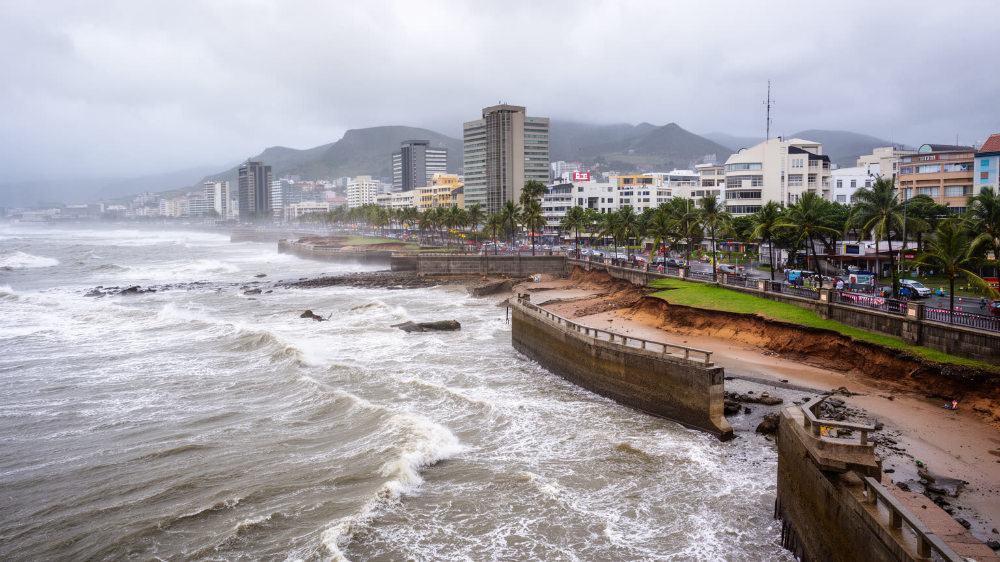
ダーバンの亜熱帯気候は、海辺の魅力と災害リスクを同時にもたらします。夏は蒸し暑く、強い雨が谷筋や斜面、河川沿いの住宅地、低地の道路、港湾施設を直撃します。近年の大雨と洪水は、土砂崩れ、橋の破損、下水の流出、家屋の喪失、物流停止、死者を出し、気候変動と都市の不平等が重なる危険を見せました。被害は誰にでも同じように来るわけではありません。安全な土地を買えない人、排水が弱い非公式居住地に住む人、車を持たない人、情報を得にくい人ほど、避難と復旧の負担が大きくなります。港や観光施設が止まれば経済全体に影響しますが、個々の家庭にとっては寝具、書類、通学用品、仕事道具を失うことが生活の危機になります。気候対策は堤防や排水路だけでなく、住宅立地、斜面管理、廃棄物回収、早期警報、避難所、保険、地域団体との連携を含みます。海に面した都市の美しさは、水の暴力と切り離せません。ダーバンが将来も住み続けられる都市であるためには、ビーチの魅力を守るだけでなく、谷筋の小さな橋、排水溝、斜面の家、学校への道を守る必要があります。気候リスクを社会政策として扱えるかが、この都市の持続性を決めます。豪雨の後に最も早く必要になるのは、道路の再開だけでなく、家族が再び普通の朝を始められる支援です。備えは日常の管理に宿ります。
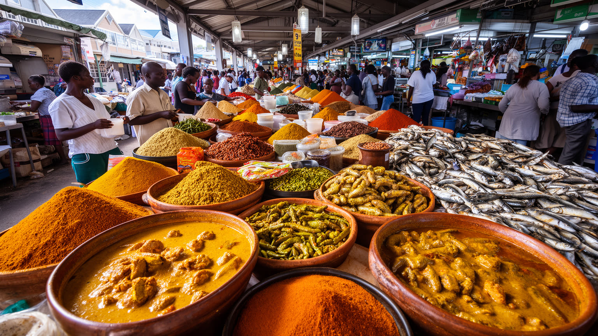
ダーバンの食文化は、港、インド系移民、ズールー地域、海岸観光、労働者の昼食が混ざって生まれます。カレー、バニー・チャウ、サモサ、ブレヤニ、チャツネ、スパイス、海鮮、焼き肉、屋台の軽食は、観光名物である前に、家庭、学校帰り、港湾労働、買い物客の時間を支える食です。市場では香辛料の匂い、野菜、魚、布、携帯用品、薬草、祈りの品が並び、商いは言語と宗教を越えて続きます。食は多文化性を楽しく見せますが、同時に階層や労働も見せます。安く腹を満たす料理の背後には、早朝の仕込み、家族経営、長時間立つ店員、配達、清掃、仕入れの不安定さがあります。観光客が名物を食べ歩く時、その価格が地元の人にとっても手頃か、店が再開発で追い出されないか、衛生規制が小さな商人を過度に苦しめないかも重要です。ダーバンの味は、契約労働の歴史を背負ったスパイスと、港町の実用的な食欲を合わせています。皿の上には、移住、差別、商売、工夫、誇りが乗っています。海辺のレストランだけでなく、中心部の市場、郊外の食堂、タウンシップの週末の調理を見ると、食が都市の記憶と経済を結ぶことが分かります。食べることは観光の楽しみであると同時に、ダーバンの住民が複数の歴史を日常へ変える方法です。スパイスの香りは、この都市が海を越えてきた人々を受け止め、作り替えてきた証でもあります。
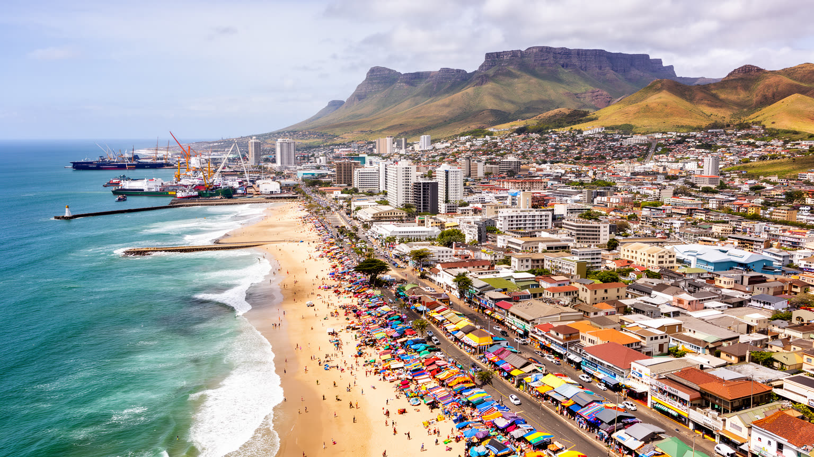
ダーバンを一つの言葉で説明するのは難しい。インド洋のビーチリゾートであり、南アフリカの貿易を支える港であり、インド系ディアスポラの大きな拠点であり、ズールー地域の都市的な入口であり、アパルトヘイト後の住宅と雇用の不平等を抱える生活都市でもあります。観光客は海岸の明るさに引き寄せられますが、都市の本質は、港湾ゲート、丘陵の通勤路、市場の食堂、タウンシップの学校、洪水で壊れた橋、寺院や教会やモスクの近さにあります。経済力は港湾処理量や観光客数だけでなく、働く人が安全に通い、住民が水と電気を得て、若者が仕事を見つけられるかで測られるべきです。ダーバンの魅力は混ざり合いにありますが、その混ざり合いは常に平等だったわけではありません。植民地、契約労働、隔離、政治暴力、災害の記憶が、食文化や海辺の余暇の中にも残ります。それでも都市は、海へ開く地理、商いの粘り、強い地域文化、公共のビーチ、港湾技能を持っています。ダーバンを読むことは、リゾートの陽光と都市の傷を同時に見ることです。海風が明るく感じられるほど、その風が運ぶ労働、移住、祈り、危険、再生の物語にも耳を傾けたい。そうして初めて、この街は単なる港町や観光地ではなく、南部アフリカの歴史と現在が交差する世界都市として見えてきます。矛盾を抱える力も都市の個性です。